Projects
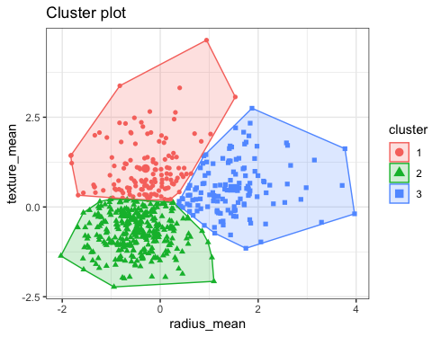
Data Science Essentials
Built a Python predictive analytics pipeline covering cleaning, modelling and clustering. Gradient Boosting ranked first at 77.3% accuracy.
View project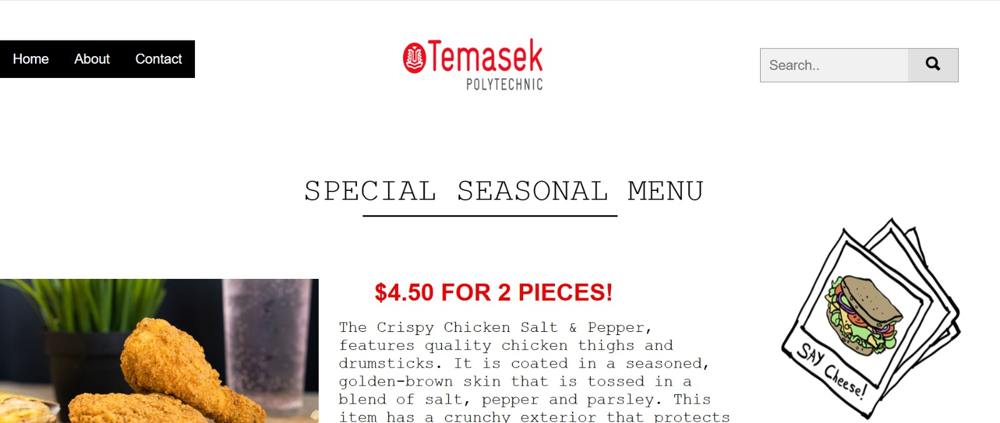
Full-Stacked Web Development
Full-stack product management site using HTML, JavaScript, Node.js/Express and MySQL to add, update and delete products and categories.
View project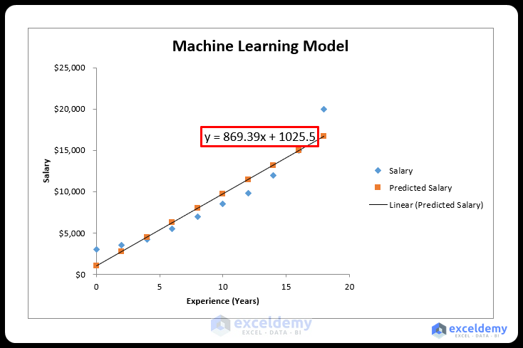
Quantitative Analysis
Tested hypotheses with chi-square tests in Excel and built a multiple linear regression model in Python for car prices (R² 0.831).
View project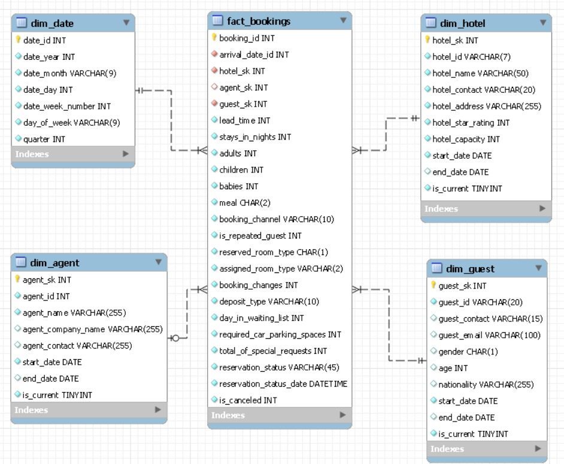
Data Warehouse & Business Intelligence
Designed a SQL star-schema data warehouse and used Alteryx for ETL and visuals that show business trends and recommendations.
View project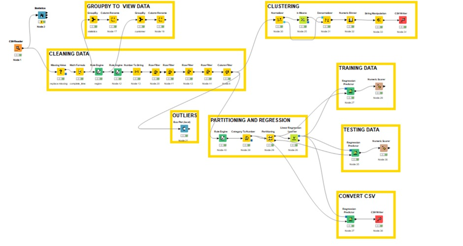
Data Visualization & Analytics
Cleaned data and built K-Means clusters and a regression model in KNIME to predict restaurant ratings (R² 0.823), visualised in Power BI.
View project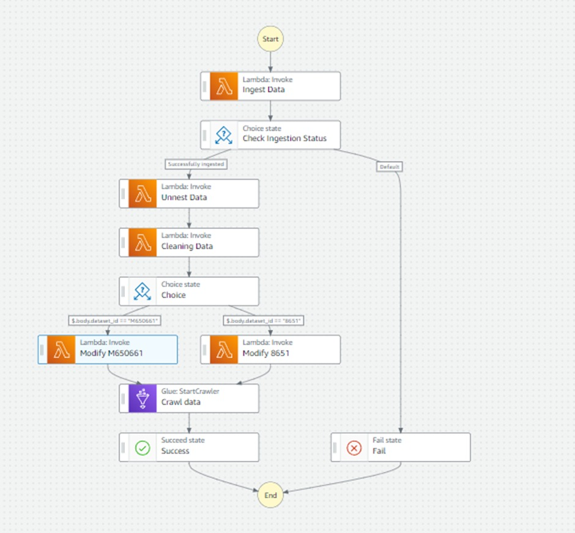
Data Engineering in the Cloud
Built an automated AWS ETL pipeline on SingStat data with cost monitoring, access security and scheduled Power BI refresh.
View project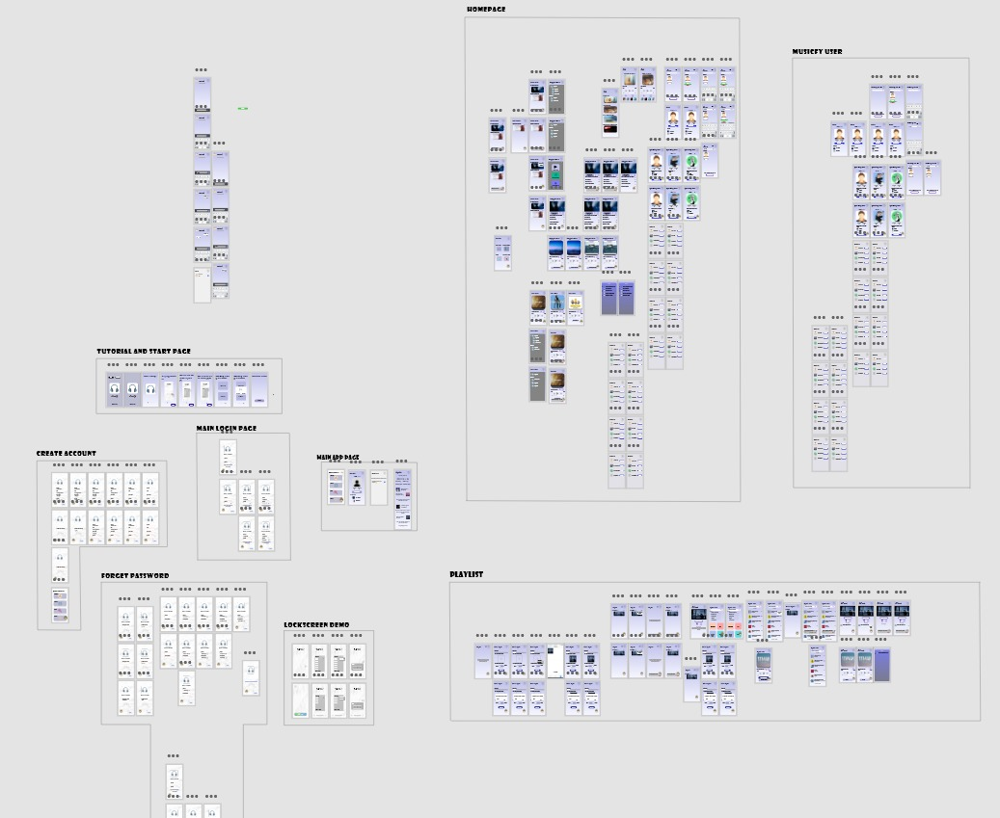
UX Design and Application Prototyping
Designed rewards and music app prototypes, from persona to high-fidelity design, refined through System Usability Scale testing.
View project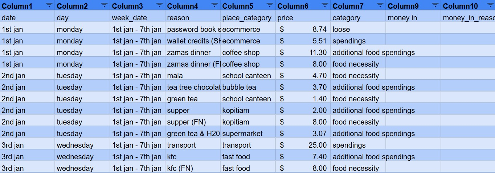
Personal Finance Tracker
Excel finance tracker with validation formulas to categorise and total spending, linked to Tableau dashboards via Google Drive.
View project
Data Storytelling (OCBC Hackathon Ignite 2025)
Third place at the OCBC Ignite Hackathon, Representing Temasek Polytechnic, integrated branch and call data into a Tableau data story with recommendations.
View project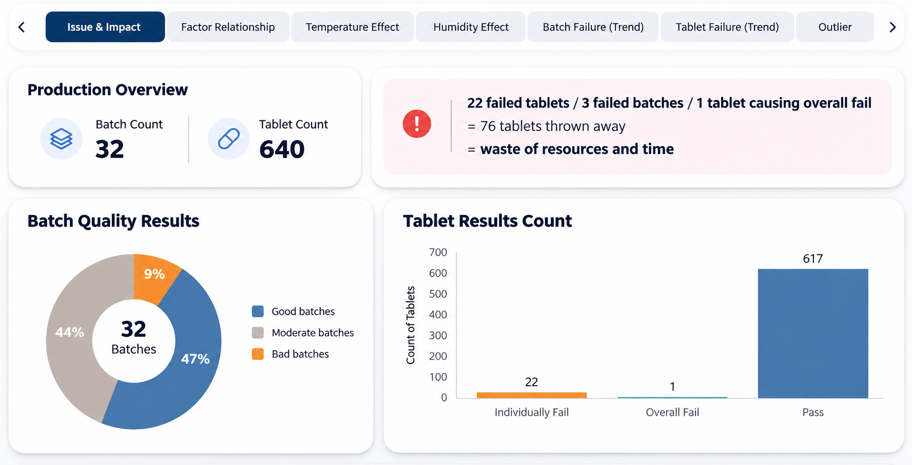
Interdisciplinary Data-Storytelling
Partnered with Pharmaceutical Science students to analyse manufacturing data and present Tableau findings and recommendations.
View project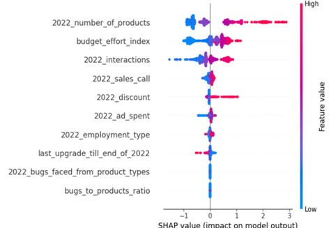
Machine Learning & Decision making
Compared Decision Tree and Random Forest models in Python and explained predictions with SHAP. Random Forest performed best (test R² 0.508).
View project
Text Social Media Analytics
Scraped Google reviews and built sentiment, word cloud, topic and clustering visuals to produce actionable recommendations.
View project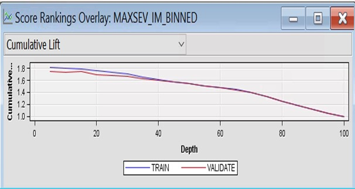
Data Mining & Analytics
Integrated three datasets in Python and SAS and built interpretable models to predict serious-injury accidents.
View project